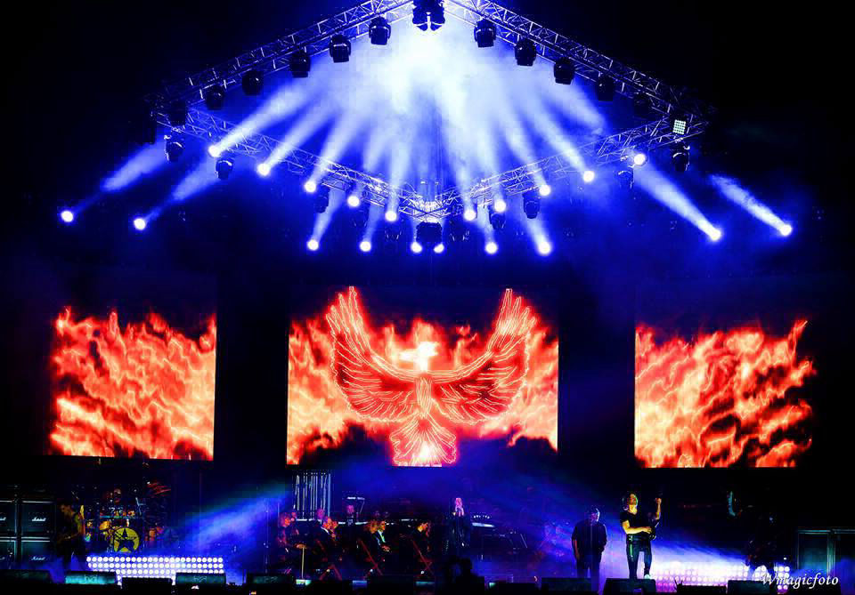
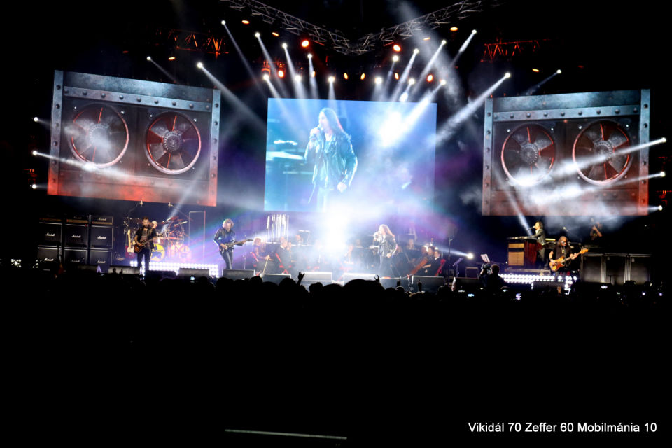

Bemutatkozó koncertjüket 2008 tavaszán Székesfehérváron tartották a Fezen Klubban. A kezdeti idők koncertjein rendszeres előzenekar volt a RockBand, amely szünet nélkül adta át helyét a Mobilmániának (2009-ig Zeffer mellett a két gitáros és a dobos is a színpadon maradt, 2010-től pedig valamennyi RockBand-tag közreműködik a Mobilmániában is).
A koncertsikerek nyomán ajánlatot kaptak lemez megjelentetésére. Úgy döntöttek, ne régi dalok kerüljenek fel
újra játszva, hanem készüljenek új szerzemények. Az album 2008 decemberében jelent meg Ez a
mánia címmel.
2009 áprilisában a Petőfi Csarnokban adtak nagyszabású koncertet, neves vendégekkel: Földes László (Hobo), aki
korábban több ismert P. Mobil-sláger szövegét írta, Tunyogi Bernadett, az elhunyt énekes lánya, az Echo Quartett
vonósnégyes, valamint a P. Mobil korábbi dobosai: Pálmai Zoltán, Döme Dezső, Herpai Sándor és Németh Gábor. A
koncertről DVD is megjelent.
2010 elején átalakult a zenekar, részben a RockBandben lezajlott változások következtében. A korábbi P.
Mobil-tagok közül Donászy Tibor is csatlakozott, aki már 2008-ban is helyettesítette néhány koncerten Borbély
Zsolt dobost. Vikidál Gyula több előadásos színházi fellépésekre kapott felkérést, emiatt kilépett, bár vendég
fellépőként számítanak rá a későbbiekben. Vámos Zsolt gitárost pedig Szentkirályi János váltotta fel. Az új
felállásban készült el év végére a második nagylemezük Az út legyen veled címmel;
amiért megkapták a szakma legrangosabb elismerését, a Fonogram-díjat.
2013 augusztusában Szentkirályi János kilépett. A hivatalos magyarázat szerint külföldi karrierjére kíván
koncentrálni, ezt azonban ő maga cáfolta. Utódja, Kispál Balázs a szeptemberi MetalWar Festen mutatkozott be.
Decemberre elkészült az előző évi PeCsa-koncert háromdimenziós felvétele, ami úttörőnek számít a magyar
könnyűzenében. A felvétel megjelent blu-rayen és moziban is bemutatták. Év végén újabb tagcserét jelentettek be:
Rudán Joe távozott az együttesből.
2014 márciusában, családi okokra hivatkozva Kozma Tamás gitáros távozott a zenekarból öt és fél év után. Az ő
helyére Csintalan Márk, a Kodolányi Főiskola gitártanszakos hallgatója érkezett.
2014. április 27-től a Mobilmánia új énekese Molnár Péter (Stula) lett. Az új felállású együttes nagyszabású
koncertet adott Budapesten. 2014 nyarán 18 előadáson keresztül végigjárták az országot.
Augusztustól lemezkészítésbe kezdtek. 2014. október 27-én a Hammer Records kiadásában hivatalosan megjelent a
Fénypokol című album. A lemezen 15 új dal hallható, a szövegeket a korábbiakhoz hasonlóan
Horváth Attila írta.
2015. május 16-án Donászy Tibor dobos Facebook-oldalán bejelentette, hogy távozik a zenekarból. Utódja, a
gitáros Csintalan Márk testvére, Csintalan György lett.
2016 júliusában, a nyári HammerWorld magazin mellékleteként, megjelent az együttes harmadik koncert DVD-je
Fénypokol koncert címmel, ami az együttes 2015. július 9-én a budapesti Barba Negra Track-en adott koncertjének
felvételét tartalmazza. 2016 októberében az anyag CD-n is megjelent.
2016. október 23-án Molnár Péter (Stula) énekes váratlanul bejelentette, hogy elhagyja az együttest. A
megüresedett poszt betöltésére országos casting kiírását tervezi. 2017 januárjában a Csintalan fivérek távoztak
az együttesből és a RockBandből is, a dobokhoz pedig Donászy Tibor tér vissza.
2017 februárjában az együttes hivatalos Facebook oldalán jelentette be, hogy az új gitáros Nusser Ernő
(RockBand, Bajnok Rock Team, Tunyogi Rock Band, Időgép, Unisex, Rolls Frakció), míg az új énekes Gamsz Árpád
(Avenford) lesz.
Az új felállás 2017 október 14.-én jelentette meg Vándorvér című első, közös albumát, aminek dalait a Rádió Rock
reggeli műsorában, és másnap a Barba Negrában mutatták be.
2018 január 6.-án tripla jubileumi koncert volt a Papp László Budapest Sportarénában Vikidál Gyula 70., Zeffer
András 60., és a Mobilmánia 10. születésnapja alkalmából.
Képek a koncertről:


2019 februárjában Kispál Balázs gitáros távozott, utolsó koncertje a zenekarral február 16.-án volt Szarvason.
Ettől kezdve az együttes másfél gitáros felállásban játszott (Gamsz Árpád többször is gitározik az éneklés
mellett). Ez a felállás 2022 novemberéig tartott, amikor a zenekar bejelentette Szijártó Zsolt (Kárpátia, Omen,
Akela) gitáros csatlakozását.
2023. január 13-án és 14-én a Barba Negrában sajátos dupla koncertet adott a zenekar: az első estén 100% Mobil
címmel csak P. Mobil-dalokat játszottak, másnap pedig 100% Mánia címmel csak saját szerzeményeket.
2023. decemberében év végi konceretet adtak a Barba Negrában. Vikidál Gyula, Szirota Jennifer és Molnár György
(Omega) közreműködésével.
2024 januárjának elején Donászy Tibor kilépett az együttesből. Helyére Hornyák Péter érkezett. Február közepén a
zenekar bejelentette, hogy Gamsz Árpád távozik.
Az együttes új énekes azóta Tóth Attila, aki korábban a Pokolgép énekese volt.
A történet leírásában nagyrészt a Wikipédiát használtam, de a végét (kb. az utolsó 1,5 bekezdés) saját ismereteim alapján írtam. Mivel ezen információk a Wikipédián nincsenek fent.